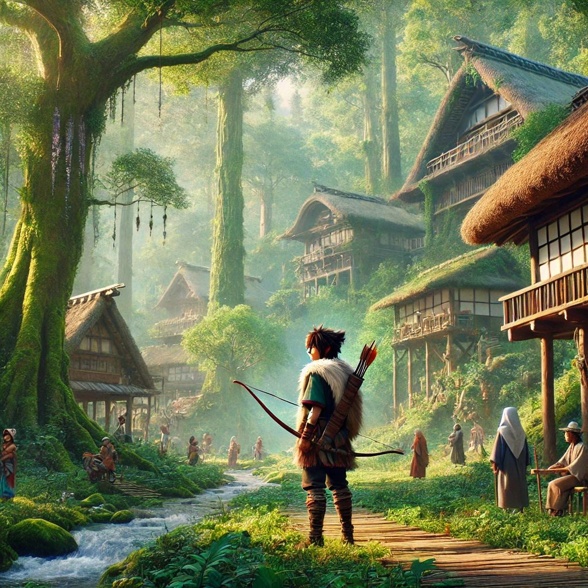
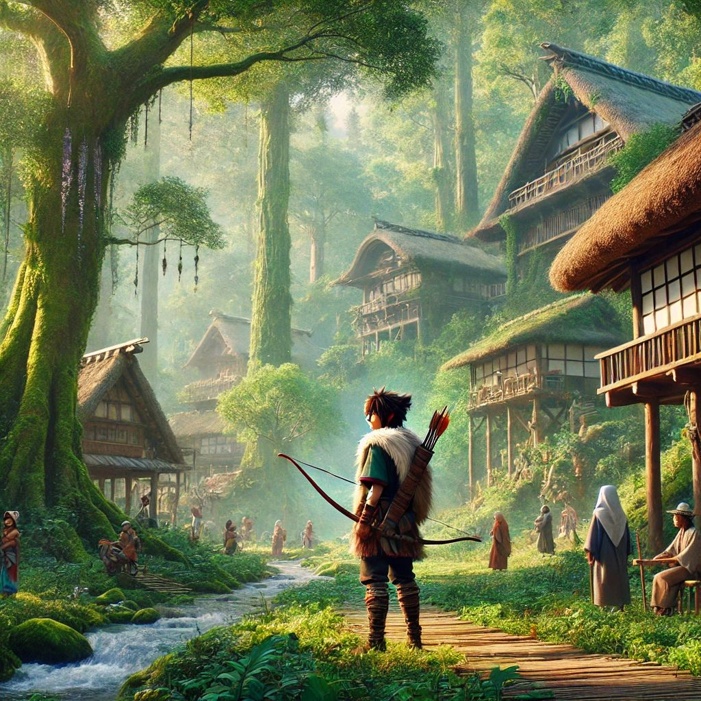

La princesa Mononoke
Aventura grafica.
 Ashitaka salva su aldea de un Tatarigami, que resulta ser Nago, un dios jabalí
corrompido por el odio. La maldición que le deja le otorga fuerza, pero se propaga
rápidamente. Durante su viaje, Ashitaka presencia un saqueo de samuráis y, al intentar
detenerlos, la maldición activa un poder sobrenatural. Más adelante, conoce a la princesa
Mononoke, quien lucha por proteger la naturaleza, y se enfrenta a Lady Eboshi, la líder de
una aldea que destruye los bosques para la industrialización. Ashitaka intenta mediar entre
ambas, pero la situación escala a una guerra entre los jabalíes y los humanos de Lady Eboshi.

En medio del conflicto, el dios jabalí Nago se transforma completamente en un Tatarigami
descontrolado. Ashitaka y la princesa Mononoke llevan al dios jabalí al dios ciervo para
curarlo, pero Lady Eboshi, al ver al dios ciervo, lo decapita. Esto convierte al dios
ciervo en una sombra oscura, pero al recuperar su cabeza, la paz se restablece. Finalmente,
Lady Eboshi renuncia a su guerra contra la naturaleza, y el equilibrio entre ambos mundos
se restaurará.
Ashitaka salva su aldea de un Tatarigami, que resulta ser Nago, un dios jabalí
corrompido por el odio. La maldición que le deja le otorga fuerza, pero se propaga
rápidamente. Durante su viaje, Ashitaka presencia un saqueo de samuráis y, al intentar
detenerlos, la maldición activa un poder sobrenatural. Más adelante, conoce a la princesa
Mononoke, quien lucha por proteger la naturaleza, y se enfrenta a Lady Eboshi, la líder de
una aldea que destruye los bosques para la industrialización. Ashitaka intenta mediar entre
ambas, pero la situación escala a una guerra entre los jabalíes y los humanos de Lady Eboshi.

En medio del conflicto, el dios jabalí Nago se transforma completamente en un Tatarigami
descontrolado. Ashitaka y la princesa Mononoke llevan al dios jabalí al dios ciervo para
curarlo, pero Lady Eboshi, al ver al dios ciervo, lo decapita. Esto convierte al dios
ciervo en una sombra oscura, pero al recuperar su cabeza, la paz se restablece. Finalmente,
Lady Eboshi renuncia a su guerra contra la naturaleza, y el equilibrio entre ambos mundos
se restaurará.

Aventura grafica
proceso de la Aventura.
Para desarrollar esta aventura gráfica, utilizamos la IA de Microsoft Designer para crear las imágenes que aparecen en la aventura. Luego, empleamos Draw.io para diseñar un diagrama que nos ayudara a organizarnos y planificar correctamente nuestra aventura gráfica. Finalmente, implementamos el proyecto utilizando el entorno de programación Processing p5.js.

integrante del equipo
Somo Milagros Pocholo y Joaquin parello de la comicion 4 .